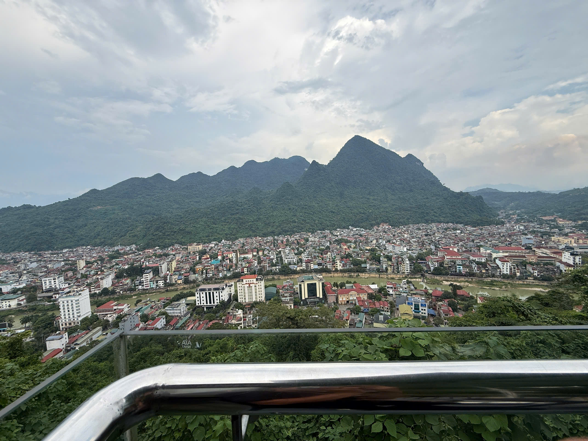
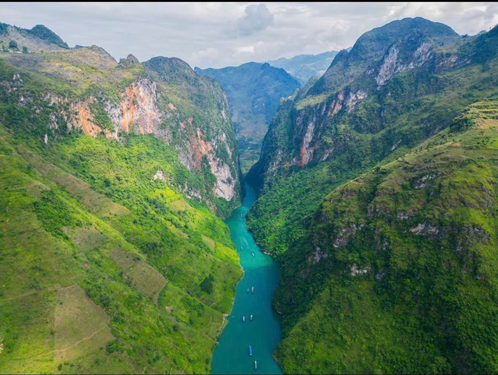
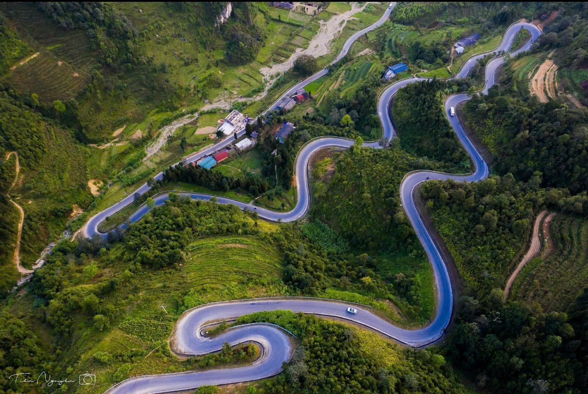

Hanoi pickup & coach · included
Included in the published 3-day and 4-day prices. Pickup point, coach type and departure time are confirmed before travel; private arrangements follow your quote.
Three days through the northern mountains, from the valleys of Du Gia to the limestone scenery around Dong Van. Discover waterfalls, river views and mountain passes, then return to Ha Giang through Yen Minh. Choose this route when your time is limited and you are comfortable with a fuller second day.
Classic tour prices are per person in USD and include Hanoi pickup and the coach journey to Ha Giang City. Final price within the range and all other services are confirmed in writing. Private tours receive a tailored quote.
Request this itinerary ↗
Proposed itinerary: the exact stops and overnight arrangements are agreed before booking. Weather, road conditions and local access may change the order or availability of activities.
Ha Giang → Bac Sum Pass → Quan Ba Twin Mountains → pine-hill stop → Du Gia
Leave Ha Giang and follow the mountain roads towards Quan Ba. Pause at Bac Sum and the Twin Mountains viewpoints, then take a pine-hill break before continuing to Du Gia. The local team confirms the pine viewpoint and connecting road to suit the day's conditions and timing.
Proposed overnight: Du Gia.

Du Gia Waterfall → Nho Que River / Ma Pi Leng → Skywalk → Dong Van
Start with Du Gia Waterfall, then continue towards the Nho Que River and Ma Pi Leng area. River access and pass viewpoints are sequenced locally to allow time for the descent and return. A boat trip is an option to confirm in the quote, not an automatic inclusion. Add a Skywalk viewpoint walk only when local access, weather and the group's ability allow; finish in Dong Van.
Proposed overnight: Dong Van. This is the most activity-heavy day.

Dong Van → Tham Ma Pass → Yen Minh → weaving village → waterfall stop → Ha Giang
Return via Tham Ma Pass and Yen Minh. Lung Tam is the proposed weaving-village visit in the Quan Ba area, offering a chance to learn about Hmong hemp textiles and handweaving when the workshop is open. A final waterfall stop is subject to a suitable location and time on the return route, agreed before booking. Finish in Ha Giang and arrange onward-transfer timing separately.
Finish: Ha Giang. No overnight stay included in this itinerary after the return.

Hanoi pickup and coach travel to Ha Giang City are included in the published 3-day and 4-day prices. Confirm your meeting point, departure time and coach type before travel. Transfer time is separate from the loop days. Private and onward-transfer arrangements follow your quote.
Hanoi pickup and coach travel are included in the classic tour prices. Your quote confirms all other services below.
Included in the published 3-day and 4-day prices. Pickup point, coach type and departure time are confirmed before travel; private arrangements follow your quote.
Choose your preferred arrangement. Vehicle, driver or guide and language support are agreed in the quote.
Overnight bases follow the itinerary. Exact rooms, properties and meals are confirmed before booking.
Boat rides, admission fees, workshop access and insurance terms must be itemised in your confirmation.
Optional services are explained before they are added. Your local guide can also help shape the route around your group.
Both routes feature Du Gia, Nho Que River and Ma Pi Leng. The 3-day version returns on day three; the 4-day version adds a Lung Cu and northern-frontier day, plus a proposed third night in Yen Minh.
Not automatically. Boat tickets, local transfers and any other optional experience are charged separately unless they are listed in your written quote. Your guide will explain the practical options and help shape the day around your time, weather and comfort.
No. The 4-day itinerary may include a locally permitted viewpoint on the Vietnam side. The exact stop is confirmed with the local team.
Lung Tam is the proposed weaving-village stop, subject to workshop access and route timing. The return-day waterfall is chosen with your guide according to the road, weather and available time. Any added entrance, transfer or activity fee is explained before it is added.
The prices are USD 200–226 per person for 3 days / 2 nights and USD 250–270 per person for 4 days / 3 nights, including Hanoi pickup and coach travel to Ha Giang City. Your exact price, coach type and timing are confirmed before travel. Other services and return or onward transport are itemised in writing. Private tours receive a tailored quote.
First share your dates, group size and route. We then confirm the price, included services and any separately charged options in writing. Your guide can suggest a practical plan before you decide. Pay only the agreed deposit to a verified official recipient; the deposit amount, payment method and booking conditions are confirmed directly before payment.
Yes. Road conditions, river access, waterfall conditions and viewpoint access can change the plan. Your local guide will recommend safer alternatives and help adjust the order of stops. Skywalk visits are conditional; do not enter closed trails or stop for photos on an active roadway.
Optional boat rides, extra entrance tickets, special room requests, private transfers, additional meals or activities outside the agreed route may be charged separately. We explain each item before adding it, and your guide can suggest the best-value choice for your group.
Yes. Tell us your dates, group size, pace and priorities. A local guide can suggest stops, timing and practical alternatives so the route fits your group instead of becoming a rushed checklist. For detailed advice, contact us by Gmail or WhatsApp.
For a detailed quote or questions about pickup, optional services and the route, contact us by Gmail or WhatsApp. We will clarify what is included, what is optional and what should be confirmed before you book.
Destination background: Vietnam Tourism: Roadside adventures in Ha Giang · VNAT: Lung Tam brocade weaving village · Vietnam Tourism: Ha Giang landscapes. These describe destinations; they do not confirm tour inclusions.